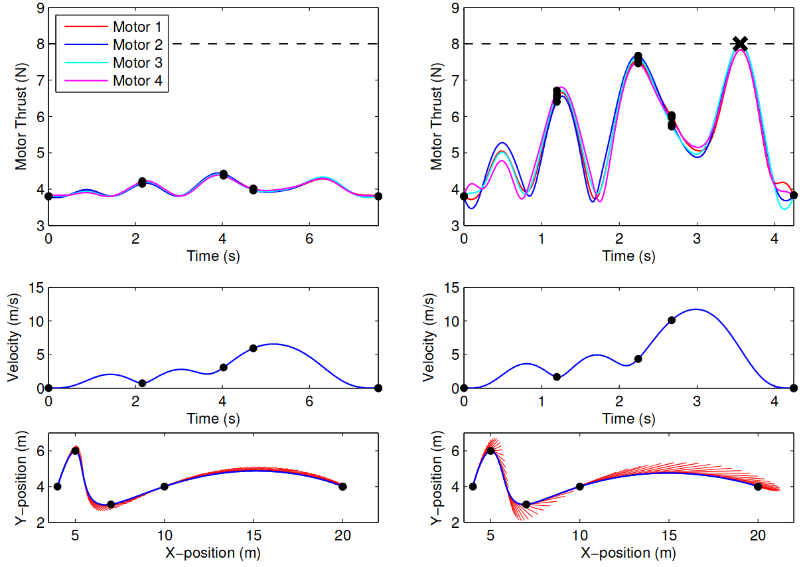
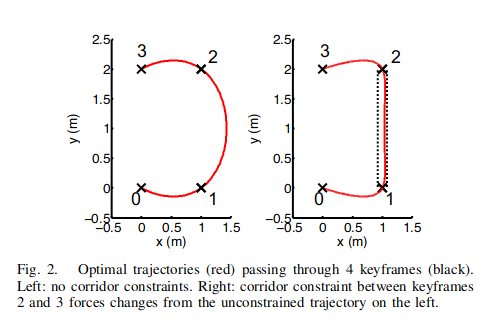
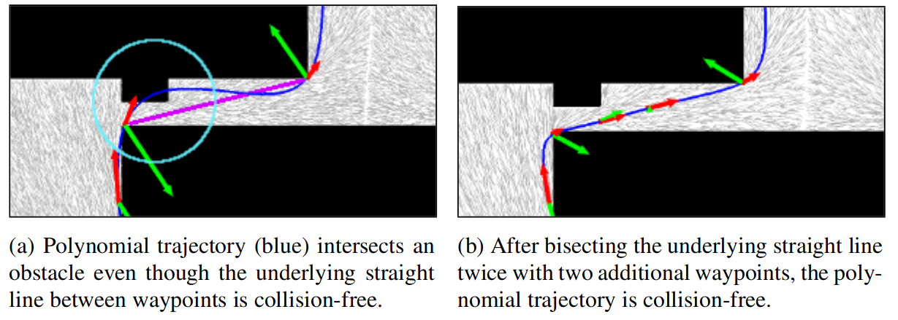
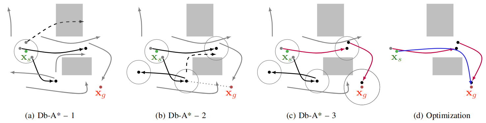

Flying Robots
Motion Planning
Wolfgang Hönig
January 31, 2025
Math definitions
% vectors % custom math commands %
Motion Planning
Motivation
- Controllers need current state (MEKF) and desired state
- Desired states should be feasible
We have:
- State: \(\mathbf{x}= (\mathbf{p}, \mathbf{v}, \mathbf{R}, \boldsymbol{\omega})^\top \in \mathbb R^3 \times \mathbb R^3 \times SO(3) \times \mathbb R^3\)
- Action: \(\mathbf{u}= (f_1, f_2, f_3, f_4)^\top \in \mathbb R^4\)
Motion Planning: given start state \(\mathbf{x}_s\) and goal state \(\mathbf{x}_g\), find a sequence of states and actions that are collision-free, obey the robot dynamics, start at \(\mathbf{x}_s\) and end at \(\mathbf{x}_g\)
Formal Definition
\[ \begin{align} \mathop{\mathrm{argmin}}_{T, \mathbf{u}(t), \mathbf{x}(t)} \quad J(T, \mathbf{u}(t), \mathbf{x}(t)) \quad \text{s.t.}\\ \mathbf{x}(0) = \mathbf{x}_{s} \quad \mathbf{x}(T) = \mathbf{q}_{g}\\ \mathcal{B}(\mathbf{x}(t)) \subset \mathcal{W}_{free} \quad \forall t \in [0, T]\\ \dot{\mathbf{x}}(t) = \mathbf{f}(\mathbf{x}(t), \mathbf{u}(t)) \quad \forall t \in [0, T) \end{align} \]
Path planning (or sometimes geometric planning ignores the dynamics constraint \(\dot{\mathbf{x}}(t) = \mathbf{f}(\mathbf{x}(t), \mathbf{u}(t))\) (and thus becomes independent of time).
Approaches
- Search: A* and variants
Build a graph that keeps track of cost-to-come and cost-to-go. For motion planning: edges are state sequences that follow the dynamics (e.g., left turn).
- Sampling: RRT and variants
Sample random states and try to connect them to existing states.
- Optimization: Splines, SCP, NLP
Solve a convex or nonlinear program that directly or indirectly encodes the motion planning problem.
All three (and hybrid variants) are relevant for flying robots.
Background: Differential Flatness
Differentially Flat System
A robot with dynamics \(\dot{\mathbf{x}} = \mathbf{f}(\mathbf{x}, \mathbf{u})\) is differentally flat if we can find flat outputs \(\mathbf{z}(t)\) such that: \[\begin{align*} \mathbf{x}(t) &= g_q(\mathbf{z}, \dot{\mathbf{z}}, \ddot{\mathbf{z}}, \ldots)\\ \mathbf{u}(t) &= g_u(\mathbf{z}, \dot{\mathbf{z}}, \ddot{\mathbf{z}}, \ldots). \end{align*}\] That is, we can compute the configuration and action sequence from \(\mathbf{z}(t)\) and a finite number of derivatives of \(\mathbf{z}(t)\).
Differential Flatness for Multirotors (Mellinger and Kumar 2011; Faessler, Franchi, and Scaramuzza 2018)
Pick flat output of position and yaw: \(\mathbf{z}= [\mathbf{p}, \psi]^\top\), i.e., we need \(\mathbf{p}, \dot{\mathbf{p}}, \ddot{\mathbf{p}}, \dddot{\mathbf{p}}, \ddddot{\mathbf{p}}, \psi, \dot{\psi}, \ddot{\psi}\)
Dynamics with \(\mathbf{R}\): \[\begin{align} &\dot{\mathbf{p}} = \mathbf{v}, && m\mathbf{\dot{v}} = m\mathbf{g} + f \mathbf{R} \mathbf{e}_3,\\ &\dot{\mathbf{R}} = \mathbf{R}\boldsymbol{\hat{\omega}}, && \mathbf{J}\dot{\boldsymbol{\omega}} = \mathbf{J}\boldsymbol{\omega}\times \boldsymbol{\omega}+ \boldsymbol{\tau}_u, \end{align}\]
Our flat outputs already contain \(\mathbf{p}\) and \(\mathbf{v}\). We need to find expressions for other states (\(\mathbf{R}, \boldsymbol{\omega}\)) and actions (\(f\), \(\boldsymbol{\tau}_u\))
Differential Flatness for Multirotors: Rotation (Faessler, Franchi, and Scaramuzza 2018)
Approach: select rotation, such that \(m\mathbf{\ddot{p}} = m\mathbf{g} + f \mathbf{R} \mathbf{e}_3\) is true
\[ \begin{align} \mathbf{x}_c &= \begin{bmatrix} \cos(\psi) & \sin(\psi) & 0\end{bmatrix}^\top\\ \mathbf{y}_c &= \begin{bmatrix} -\sin(\psi) & \cos(\psi) & 0\end{bmatrix}^\top\\ \mathbf{x}_b &= n(\mathbf{y}_c \times (\ddot{\mathbf{p}} - \mathbf{g}))\\ \mathbf{y}_b &= n((\ddot{\mathbf{p}} - \mathbf{g}) \times \mathbf{x}_b)\\ \mathbf{z}_b &= \mathbf{x}_b \times \mathbf{y}_b \end{align} \]
\(\mathbf{R}= \begin{bmatrix} \mathbf{x}_b & \mathbf{y}_b & \mathbf{z}_b \end{bmatrix}\) (a function of \(\ddot{\mathbf{p}}, \psi\))
Conceptually the same as in controls lecture. Slight change, because we’ll use the temporary variables later.
Differential Flatness for Multirotors: Force (Faessler, Franchi, and Scaramuzza 2018)
Approach: solve \(m\mathbf{\ddot{p}} = m\mathbf{g} + f \mathbf{R} \mathbf{e}_3\) for \(f\)
\[ \begin{align} c &= \mathbf{z}_b^\top (\ddot{\mathbf{p}} - \mathbf{g})\\ \end{align} \]
\(f = m c\) (a function of \(\ddot{\mathbf{p}}, \psi\))
Differential Flatness for Multirotors: Angular Velocity (Faessler, Franchi, and Scaramuzza 2018)
Approach: compute time-derivative of \(m\mathbf{\ddot{p}} = m\mathbf{g} + f \mathbf{R} \mathbf{e}_3\), use \(\dot{\mathbf{R}} = \mathbf{R}\hat{\boldsymbol{\omega}}\), solve for \(\boldsymbol{\omega}\)
\[ \begin{align} d_1 &= \mathbf{x}_b^\top \dddot{\mathbf{p}} & d_2 &= -\mathbf{y}_b^\top \dddot{\mathbf{p}} \\ b_3 &= -\mathbf{y}_c^\top \mathbf{z}_b & c_3 &= \| \mathbf{y}_c \times \mathbf{z}_b \|& d_3 &= \dot \psi \mathbf{x}_c^\top \mathbf{x}_b\\ \omega_x &= \frac{d_2}{c} & \omega_y &= \frac{d_1}{c} & \omega_z &= \frac{c d_3 - b_3 d_1}{c c_3} \end{align} \]
\(\boldsymbol{\omega}= \begin{bmatrix} \omega_x & \omega_y & \omega_z \end{bmatrix}^\top\) (a function of \(\ddot{\mathbf{p}}, \dddot{\mathbf{p}}, \psi, \dot{\psi}\))
Note that \(\omega_z\) is wrong in (Mellinger and Kumar 2011) and in our controls lecture. Details are in (Faessler, Franchi, and Scaramuzza 2018) (Appendix A).
Differential Flatness for Multirotors: Angular Acceleration (Faessler, Franchi, and Scaramuzza 2018)
Approach: differentiate \(m\mathbf{\ddot{p}} = m\mathbf{g} + f \mathbf{R} \mathbf{e}_3\) twice, solve for \(\dot{\boldsymbol{\omega}}\)
\[ \begin{align} \dot{c} &= \mathbf{z}_b^\top \dddot{\mathbf{p}}\\ e_1 &= \mathbf{x}_b^\top \ddddot{\mathbf{p}} - 2\dot{c} \omega_y - c \omega_x \omega_z\\ e_2 &= -\mathbf{y}_b^\top \ddddot{\mathbf{p}} - 2\dot{c} \omega_x + c \omega_y \omega_z\\ e_3 &= \ddot{\psi} \mathbf{x}_c^\top \mathbf{x}_b + 2 \dot{\psi} \omega_z \mathbf{x}_c^\top \mathbf{y}_b - 2 \dot{\psi} \omega_y \mathbf{x}_c^\top \mathbf{z}_b - \omega_x \omega_y \mathbf{y}_c^\top \mathbf{y}_b - \omega_x \omega_z \mathbf{y}_c^\top \mathbf{z}_b\\ \end{align} \] \[ \begin{align} \dot{\omega}_x &= \frac{e_2}{c}& \dot{\omega}_y &= \frac{e_1}{c}& \dot{\omega}_z &= \frac{c e_3 - b_3 e_1}{c c_3}\\ \end{align} \]
\(\dot{\boldsymbol{\omega}} = \begin{bmatrix} \dot{\omega}_x & \dot{\omega}_y & \dot{\omega}_z \end{bmatrix}^\top\) (a function of \(\ddot{\mathbf{p}}, \dddot{\mathbf{p}}, \ddddot{\mathbf{p}}, \psi, \dot{\psi}, \ddot{\psi}\))
Note that this was missing in the controls lecture.
Differential Flatness for Multirotors: Torque (Faessler, Franchi, and Scaramuzza 2018)
Approach: apply derived \(\boldsymbol{\omega}\) and \(\dot{\boldsymbol{\omega}}\) to dynamics
\(\boldsymbol{\tau}_u = \mathbf{J}\dot{\boldsymbol{\omega}} - \mathbf{J}\boldsymbol{\omega}\times \boldsymbol{\omega}\) (a function of \(\ddot{\mathbf{p}}, \dddot{\mathbf{p}}, \ddddot{\mathbf{p}}, \psi, \dot{\psi}, \ddot{\psi}\))
Differential Flatness for Multirotors: Usage in the Nonlinear Controller
- Desired rotation \(\mathbf{R}_d\) is computed based on the desired force (a function of the position and velocity error); computation is using the differential flatness
- Desired angular velocity \(\boldsymbol{\omega}_d\) is computed using the differential flatness (using \(\mathbf{R}_d\), rather than \(\mathbf{R}\))
- Desired angular acceleration \(\dot{\boldsymbol{\omega}}_d\) is computed using the differential flatness
Polynomial Splines
How does this help for kinodynamic motion planning?
We can plan a trajectory for \(\mathbf{z}(t)\). By applying \(\mathbf{g}_q\) and \(\mathbf{g}_u\), we can compute the state and action sequences for the original motion planning problem!
If \(\mathbf{z}(t)\) is lower-dimensional than \(\mathbf{x}(t), \mathbf{u}(t)\), the planning problem is simplified.
Polynomial Splines
Polynomial
\[ p(t) = a_0 + a_1 t + a_2 t^2 + \ldots + a_n t^n = \sum_{k=0}^n a_k t^k \]
- Cubic polynomial: \(p(t) = a_0 + a_1 t + a_2 t^2 + a_3 t^3\)
What are the values at \(t=0\) and \(t=1\)? What are \(\dot{p}(0), \dot{p}(1)\)
\[ \begin{align} p(0) &= a_0 & p(1) &= a_0 + a_1 + a_2 + a_3\\ \end{align} \]
\[ \begin{align} \dot{p}(t) &= a_1 + 2 a_2 t + 3 a_3 t^2 & \dot{p}(0) &= a_1 & \dot{p}(1) &= a_1 + 2 a_2 + 3 a_3\\ \ddot{p}(t) &= 2a_2 + 6 a_3 t & \ddot{p}(0) &= 2 a_2 & \ddot{p}(1) &= 2a_2 + 6 a_3\\ \dddot{p}(t) &= 6 a_3 & \dddot{p}(0) &= 6 a_3 & \dddot{p}(1) &= 6 a_3 \end{align} \]
Polynomial Splines
Assume we represent the trajectory using polynomial splines.
What is the acceleration cost?
\[ \begin{align} J &= \int_{t=0}^1 \ddot{p}(t) dt\\ &= \int_{t=0}^1 2a_2 + 6 a_3\\ &= \left. 2 a_2 t + 3 a_3 t^2 \right|_{t=0}^1\\ &= 2 a_2 + 3 a_3 \end{align} \]
Polynomial Splines
Let’s try to connect 3 numbers \(x_1, x_2, x_3 \in \mathbb R\) using 2 cubic polynomials (with coefficients \(a\) and \(b\)):
\[ \begin{align} \mathop{\mathrm{argmin}}_{a_0, a_1, a_2, a_3, b_0, b_1, b_2, b_3} \quad J_a + J_b \quad \text{s.t.}\\ p_a(0) = x_1\\ p_a(1) = x_2\\ p_b(0) = x_2\\ p_b(1) = x_3\\ \dot{p}_a(1) = \dot{p}_b(0)\\ \ddot{p}_a(1) = \ddot{p}_b(0) \end{align} \]
Planning in Free Space
- Optimize splines for each dimension (\(x, y, z, \psi\))
- For position, ensure smoothness at least up to snap (i.e., \(\ddddot{p}_a(1) = \ddddot{p}_b(0)\); use at least 5th-order splines)
- For yaw, ensure smoothness at least up to acceleration
- In practice: 8th-order splines are common
- Constrain start to current state
- Constrain goal to final/desired state
Demo: cubicspline2d.py
Planning for Aggressive Maneuvers
Planning for Aggressive Maneuvers
Assume we have a desired rotation \(\mathbf{R}_d\) at a certain time:
Constrain acceleration to: \[ \mathbf{\ddot{p}} = \mathbf{g} + r \mathbf{R}_d \mathbf{e}_3, \text{ where } r \in \mathbb R_+ \]
Temporal Scaling
\[ p(t) = \sum_{k=0}^n a_k t^k \;\; t\in[0,1] \]
Consider a time horizon \(T\), i.e., \(t\in [0, T]\): \[ \tilde{p}(t) = \sum_{k=0}^n a_k \left(\frac{t}{T}\right)^k = \sum_{k=0}^n \frac{a_k}{T^k} t^k = \sum_{k=0}^n \tilde{a}_k t^k \text { where } \tilde{a}_k = \frac{a_k}{T^k} \]
Time derivative for cubic spline: \[ \tilde{p}'(t) = \tilde{a}_1 + 2 \tilde{a}_2 t + 3 \tilde{a}_3 t^2 = \frac{a_1}{T} + 2 \frac{a_2}{T^2} t + 3 \frac{a_3}{T^3} t^2 \]
The derivative gets smaller for \(T > 1\): \(\lim_{T\to\infty} \tilde{p}'(t) = 0\)
Temporal Scaling
def temporalScaling():
z(t) = solveQP() # use arbitrary T
while True:
max_mag = computeMaxLimits(z)
if lower_bound > max_mag: # too slow
decrease(T)
elif upper_bound < max_mag: # too fast
increase(T)
else:
return z(t)
z(t) = UpdateCoefficients(z(t), T)- Rescaling is fast, since rescaling is just updating the coefficients
- Computing the maxLimits is “costly” (numeric methods)
- Here: Use differential flatness to compute motor forces, check if those are within bounds
Temporal Scaling Example (Richter, Bry, and Roy 2013)

Planning with Obstacles (Mellinger and Kumar 2011)
- At intermediate points, add additional constraints (remains QP)

Planning with Obstacles (Richter, Bry, and Roy 2013)
- Use sampling-based geometric planning (RRT) + Optimization
- If there is a collision, add another waypoint

Planning with Obstacles (Richter, Bry, and Roy 2013)
- Or use RRT, with splines in the extent step

Planning with Obstacles (Liu et al. 2018)
- Search-based approach that uses differentially-flatness for edges on A*
Advanced Topics
Double Integrator Assumption
- For many applications double integrator dynamics (and \(\psi=0\)) are used for planning
\[ \begin{align} \mathbf{x}&= [\mathbf{p}, \mathbf{v}]^\top & \mathbf{u}&= [\mathbf{a}]^\top\\ \dot{\mathbf{x}} &= f(\mathbf{x}, \mathbf{u}) = [\mathbf{v}, \mathbf{a}] \end{align} \]
From differential flatness (using \(\dddot{\mathbf{p}} = \mathbf{0}, \dot{\psi}=0\)):
- \(\mathbf{R}, f\) can be recovered from \(\mathbf{a}\)
- \(\boldsymbol{\omega}=\mathbf{0}, \dot{\boldsymbol{\omega}} = \mathbf{0}\)
Controller can compensate for missing feed-forward terms for non-aggressive flight.
Hybrid Method: db-A* (Ortiz-Haro et al. 2024)
Differential flatness is incomplete (not all possible motions can be captured), and potentially suboptimal (optimality in the flat space, does not imply optimality in the full space)
iDb-A*: connect short motion primitives (generated by optimization on the full dynamics) and allow small “jumps”; repair with optimization

Hybrid Method: db-A* (Ortiz-Haro et al. 2024)

Recovery from up-side down (with low thrust-to-weight ratio).
Planning for Multi-Robot Teams (Hönig et al. 2018)
- Use discrete search for initial multi-robot path
- Assign safe corridors, spline optimization within the corridor
Planning for Multi-Robot Teams (Moldagalieva et al. 2024)
- Extend db-A* to the multi-robot world
NMPC and/or Motion Planning
- Nonlinear Model Predictive Control (NMPC) solves the kinodynamic motion planning problem for a fixed (typically short) horizon
- Motion planning has \(T\) as decision variable
Planning in the Crazyflie Firmware
Trajectories are represented as 8th order polynomial splines
On-board planner uses closed-form solution for goTo (given start position, velocity, acceleration, compute a single spline segment that ends at a desired position with all derivates zero)
Takeoff/Landing uses the exact same spline planner
Optimization on the Crazyflie
Both have tools that generate specific C-Code from a high-level (Python) specification.
Optimization in Rust
- Optimization
Engine
- nonconvex, constrained optimization
- For “embedded” applications (meaning RPI etc.)
- argmin
- only unconstrained problems
- Clarabel
- Convex optimization, state-of-the-art solver
- Not for embedded
- Might be supported in cvxpygen in the future
- tinyMPC.rs
- Uses no_std, but nalgebra; not ported to uC
Assignment 4
Task
Generative and validate an aggressive trajectory, exploiting the differential flatness. For planning, use 8th-order polynomial splines that are smooth up to and including snap. For validation, propagate the actions (force, torque) generated by differential flatness using your simulator and compare the result with the expected values and your controller.
Notes
- Only simulation, no flight tests
- Temporal scaling not needed
- Recommended to use Python (cvxpy) for the optimization, not Rust
Timeline
- Feb 7: discussion
- Feb 14: discussion/simulation presentation, oral exam, grading
Conclusion
Learned Today
- Motion Planning for multirotors
- Differential flatness: \(\mathbf{p}, \psi\) + derivatives map to \(\mathbf{x}, \mathbf{u}\)
- Planning using polynomial splines
- Advanced planning methods (hybrid, multi-robot)
- Assignment 4
Questions
?